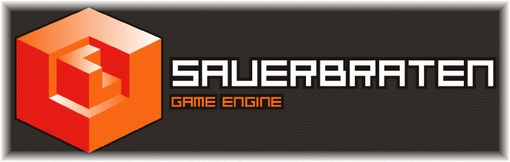

Welcome to the wiki for the
Cube / Cube 2: Sauerbraten / Cube 2: Eisenstern engines and game projects. Unless otherwise noted, information contained in this wiki refers to
Cube 2: Sauerbraten first and foremost.

Help
- The README: The first point of contact, and place you should look for information on installation and setup of the game.
- Install Guide: Usually the first thing you'll need to do is install it, this shows you some ways to do so.
- Beginners Guide: Go through the steps to get up and running.
- Frequently Asked Questions: Get the answers to some commonly asked questions, like; "The game runs very slowly, how can I fix it?", "Why is the game behaving strangely?", and "How do I fix the 'Hall of Mirrors' effect?".
- Performance Guide: Things you can try to make Sauerbraten either run faster or look better on your machine.
older resources
- Older Stuff: From Quadropolis.
- Cube Forums: If none of the above answers your question, you can try searching the forums. If your question isn't answered there, you can try posting to a relevant thread, or creating your own, being sure to supply a good description of your problem, and your operating system/hardware/software setup, while refraining from wild accusations.
Gameplay
Editing
Projects
- Eisenstern Modelling: Provides updates, progress and tasks for 3d models in the RPG part of Sauerbraten.
- Wiki Guidelines: For contributing and expanding the Cube Wiki.
- Modding Guide: Like the Cube Engine? Learn how to add stuff to the code.
- Videos: page collecting video material
Engine
The Sauerbraten game is freeware, you may freely distribute the Sauerbraten archive/installer unmodified on any media. You may re-compress using different archival formats suitable for your OS (i.e. zip/tgz/rpm/deb/dmg), any changes beyond that require my explicit permission.
You may play Sauerbraten for any purpose as long as you don't blame the author(s) for any damages incurred.
Producing Content
If you want to produce new content with the sauerbraten engine, you have to be aware that the source code may be Open Source, but the game and the media it consist of have their individual licenses and copyrights. This means that you have roughly 3 options:
- You may produce new content for the sauerbraten game, for example as a "custom map" (.ogz/.cfg/textures etc). Contributing to the original game is most welcome, and the most productive way of working with sauerbraten.
- If you want to create your own gameplay beyond what you can do with a map, the best way to do this is as a "mod" (same as above, but with new executable that incorporates your gameplay), that requires an existing install of sauerbraten, and installs only the new files you created in parallel to the existing files.
- If you insist on making a standalone game based on sauerbraten, do realize that only the sourcecode is yours to use freely (if you abide by the ZLIB license (see below)), not the media. You CANNOT simply redistribute the entire sauerbraten package with your modified files, as the majority of game media is not yours to use freely (it is made by many authors with a variety of licences and copyright restrictions). Unless you have explicit permission from the authors, or the readme says explicitly "may be used for any purpose" or similar language, it will be illegal to include in your standalone game based on the sauerbraten engine (you may not assume that just because a file has no explicit license, that it is free of copyright). Therefore, if you wish to produce a standalone game, be prepared to make many of the maps, models, textures, sounds etc from scratch yourself.
In this sense sauerbraten is similar to games like Quake (its code is Open Source, but its media is not), it is a game that is meant to be added to, not copied and used as a template. Sauerbraten is not meant to be a quick game creation kit, it is a game.
If you wish to use the Sauerbraten source code (
ZLIB license) in any way, read the src/readme_source.txt file carefully.